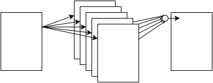

Learning Game of Life with a Convolutional Neural Network
In Greg Egan's wonderful short story "Learning to Be Me", a neural implant, called a "jewel", is inserted into the brain at birth. The jewel monitors activity in order to learn how to mimic the behavior of the brain. From the introduction
I was six years old when my parents told me that there was a small, dark jewel inside my skull, learning to be me.
Microscopic spiders had woven a fine golden web through my brain, so that the jewel's teacher could listen to the whisper of my thoughts. The jewel itself eavesdropped on my senses, and read the chemical messages carried in my bloodstream; it saw, heard, smelt, tasted and felt the world exactly as I did, while the teacher monitored its thoughts and compared them with my own. Whenever the jewel's thoughts were wrong, the teacher - faster than thought - rebuilt the jewel slightly, altering it this way and that, seeking out the changes that would make its thoughts correct.
Why? So that when I could no longer be me, the jewel could do it for me.
In this article I'd like to discuss a way of building this kind of jewel, as a convolutional neural network, which, after having seen a bunch of iterations of game of life, can learn its underlying behaviour.
Game of life as convolution
I'll assume you already know what game of life is. You have a grid of cells, black cells are considered dead, white cells are considered alive, and there are a few rules for updating the grid which are inspired by biological processes. For instance, if a dead cell has exactly three live cells in its $3\times 3$ neighbourhood then it's born.
A convolutional filter is an operation, together with a kernel (a small, e.g. $3\times 3$, matrix of weights), which transforms an image (let's restrict ourselves to grayscale, but it could also be extended to color) by mapping the intensity of each pixel in the image to a weighted sum of the intensities of its neighbours, where the weights are determined by the kernel. So for instance, the kernel $$ B= \begin{bmatrix} \frac{1}{9} & \frac{1}{9} & \frac{1}{9} \\ \frac{1}{9} & \frac{1}{9} & \frac{1}{9} \\ \frac{1}{9} & \frac{1}{9} & \frac{1}{9} \end{bmatrix}$$ results in a smudgning, or blurring, of the image (since you're taking each pixel and blending it with its closest neighbours).
$\xrightarrow{\text{B}}$
There is a direct connection between an updating rule in game of life, and a convolutional filter. I won't dwell on the precise expression[1], instead we'll just use this fact as inspiration for the architecture of the neural network that follows, and trust (hope) that the network will be able to find it for us.
[1] You can read more about this here. Think of dialation as just a thresholded convolution.
Building the jewel
Thinking of game of life as a biological process, how could we now go about building its jewel? How could we build a neural network which, given a series of game of life frames, can learn its behaviour?
The architecture is simple. The input is a grid with black and white pixels, and the output should be the next iteration according to the rules of game of life.

I chose a two-layered approach. The first layer is a convolutional layer, hooking each $3\times 3$ neighbourhood to a set of filters (arbitrarily fixed to 20) followed by a rectified linear unit[2]. The idea being that this layer should learn the rules for game of life. And it should encode those rules in the weights of the filters.
The second layer should learn the appropriate combination of these rules, and so it consists of just a (weighted) linear combination of all the filters, which is then mapped to the output. The whole thing is implemented in convnetjs with essentially just the following code